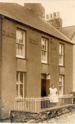

Laden
Im Jahre 1881 lebte William Williams, ein Schuhmacher, in Cambrian. Als Untermieter lebte hier auch William Owens, Talybont, Cardiganshire, der der Dorfpfarrer war. Im Jahre 1901 lebte John Parry, ein Kirchenkleriker, in Cambrian. Später wohnten hier John a Dora Jones, die ursprünglich von Fron und Hafod kamen. In den 1940er Jahren wohnte hier Mary Frons Ehemann.
Vor dem Geschäft zu Beginn des zwanzigsten Jahrhunderts. Vor 1910 war Dora Jones die Besitzerin.